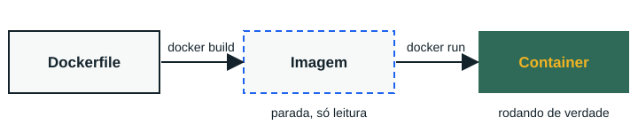

O problema que o Docker resolve
Todo mundo que programa já ouviu ou falou "na minha máquina funciona". O programa depende da versão do sistema, de biblioteca instalada, de configuração... e basta uma coisa diferente para quebrar.
O Docker resolve isso empacotando o programa junto com tudo que ele precisa. Aí ele roda igual no meu notebook, no servidor da empresa ou na nuvem. Por isso empresas como Netflix e Spotify rodam boa parte dos seus serviços em contêineres.
Container também não é máquina virtual. A VM carrega um sistema operacional inteiro dentro dela. O container usa o kernel do próprio computador e isola só o processo, então sobe em segundos e ocupa bem menos espaço.
Imagem e container
Imagem
É o pacote pronto, só leitura. Aqui ela tem o Nginx e os arquivos do meu site. Fica guardada e não faz nada sozinha.
Container
É a imagem em execução. Dá para criar vários containers da mesma imagem, cada um isolado do outro.
Para quem programa, a comparação que mais ajudou foi essa: a imagem é a classe e o container é o objeto criado a partir dela.
Do arquivo até o navegador

- Escrevo o Dockerfile, que é a receita: qual base usar e quais arquivos copiar.
- Rodo o docker build e o Docker monta a imagem seguindo a receita.
- Rodo o docker run e a imagem vira um container funcionando.
- Abro localhost:8080. A porta 8080 do meu computador é ligada na porta 80 do container, onde o Nginx está escutando.
O Dockerfile desse projeto
FROM nginx:alpine COPY index.html /usr/share/nginx/html/ COPY css/ /usr/share/nginx/html/css/ COPY js/ /usr/share/nginx/html/js/ COPY img/ /usr/share/nginx/html/img/ EXPOSE 80
FROM escolhe a base, o Nginx numa versão enxuta (alpine). Os COPY levam o site para a pasta que o Nginx lê. O EXPOSE avisa que o container usa a porta 80.
Testa aí
Esse terminal é uma simulação, só para mostrar o que cada comando faz. Os comandos de verdade estão no README.
Nenhuma imagem criada ainda.
Clique em um comando para começar.